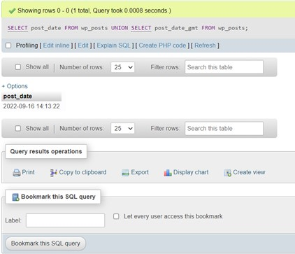
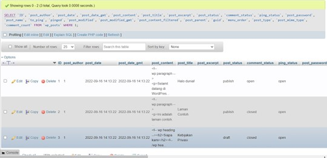
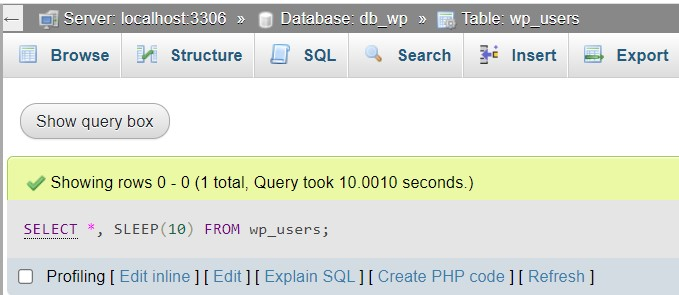
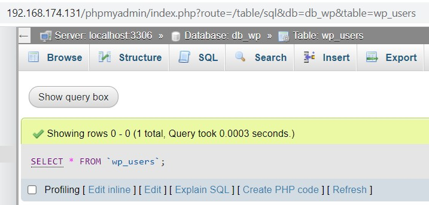
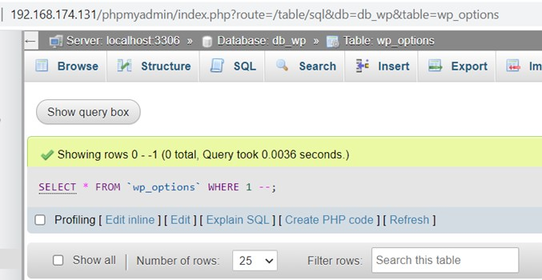
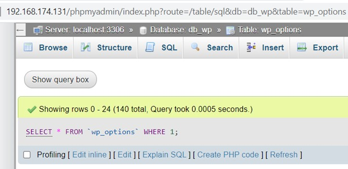

Kegunaan Syntax Union, Select, Wait dan - -
1. UNION
UNION digunakan untuk menggabungkan dua table dalam baris baru ke bawah dimana field yang di SELECT antara table satu dan lainnya adalah harus sama.

2. SELECT
SELECT digunakan untuk menunjukkan serta memilah informasi dari database seusai apa yang kita mau lihat.

3. Wait
WAIT digunakan untuk mengkonfigurasi opsi konfigurasi server di SQL Server dengan menggunakan SQL Server Management Setudio atau Transact-SQL. Opsi ini menentukan waktu,dalam detik, kueri menunggu sumber daya sebelum waktu habis.
Namun untuk Query MySQL diganti menjadi SLEEP
Saat digunakan dalam pernyataan kueri, durasi SLEEP() bergantung pada rekaman yang dikembalikan. Jika tabel tidak berisi catatan, MySQL tidak akan sleep. Namun, jika tabel memiliki catatan, waktu tidur adalah n * table records di mana n waktu tidur.
Gunakan SELECT *, SLEEP (n) from
Command SELECT *, SLEEP(10) FROM wp_users; 
Jika tidak menggunakan query sleep maka mysql akan menampilkan lebih cepat record yang ada. 
4. COMMENT --
Teks apa pun di antara - - dan akhir baris akan diabaikan (tidak akan dieksekusi).

Jika tidak menggunakan comment -- maka akan tertampil

Sekian penjelasan dari saya, Terimakasih